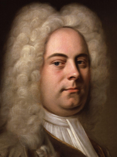

Born the same year as Johann Sebastian Bach and Domenico Scarlatti, Handel is regarded as one of the greatest composers of the Baroque era, with works such as Messiah, Water Music, and Music for the Royal Fireworks remaining steadfastly popular. One of his four Coronation Anthems, Zadok the Priest (1727), composed for the coronation of George II, has been performed at every subsequent British coronation, traditionally during the sovereign's anointing. Handel composed more than forty operas in over thirty years, and since the late 1960s, with the revival of baroque music and historically informed musical performance, interest in Handel's operas has grown.